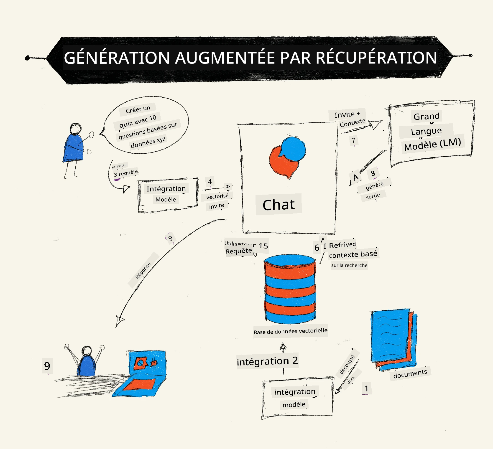
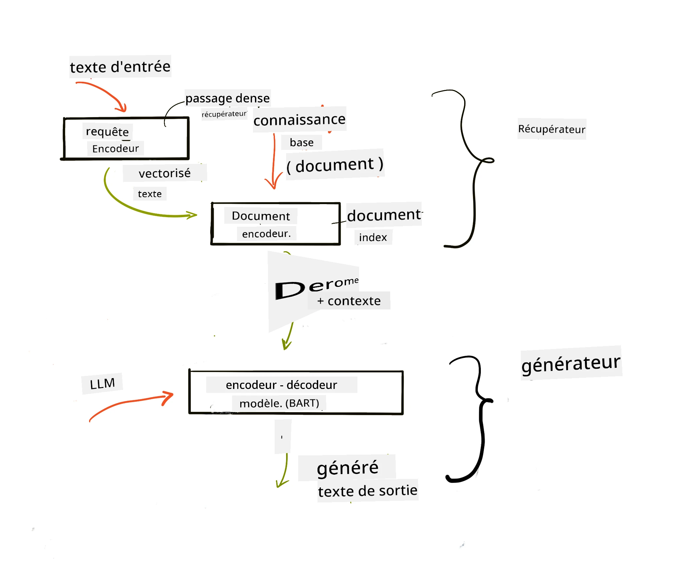
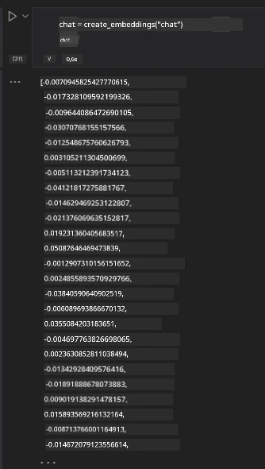

Génération Augmentée par Récupération (RAG) et Bases de Données Vectorielles#
Dans la leçon sur les applications de recherche, nous avons brièvement appris comment intégrer vos propres données dans les grands modèles de langage (LLM). Dans cette leçon, nous approfondirons les concepts de l'ancrage de vos données dans votre application LLM, les mécanismes du processus et les méthodes de stockage des données, y compris les embeddings et le texte.
Vidéo bientôt disponible
Introduction#
Dans cette leçon, nous couvrirons les points suivants :
-
Une introduction à RAG, ce que c'est et pourquoi il est utilisé en IA (intelligence artificielle).
-
Comprendre ce que sont les bases de données vectorielles et en créer une pour notre application.
-
Un exemple pratique sur comment intégrer RAG dans une application.
Objectifs d'apprentissage#
Après avoir terminé cette leçon, vous serez capable de :
-
Expliquer l'importance de RAG dans la récupération et le traitement de données.
-
Configurer une application RAG et ancrer vos données à un LLM.
-
Intégrer efficacement RAG et les bases de données vectorielles dans les applications LLM.
Notre scénario : enrichir nos LLM avec nos propres données#
Pour cette leçon, nous souhaitons ajouter nos propres notes dans la startup éducative, ce qui permettra au chatbot d’obtenir plus d’informations sur les différents sujets. En utilisant les notes que nous avons, les apprenants pourront mieux étudier et comprendre les différents thèmes, facilitant ainsi la révision pour leurs examens. Pour créer notre scénario, nous utiliserons :
-
Azure OpenAI :le LLM que nous utiliserons pour créer notre chatbot -
Leçon AI for beginners sur les réseaux neuronaux: ce seront les données sur lesquelles nous ancrerons notre LLM -
Azure AI SearchetAzure Cosmos DB :base de données vectorielle pour stocker nos données et créer un index de recherche
Les utilisateurs pourront créer des quiz d'entraînement à partir de leurs notes, des fiches de révision et résumer ces informations en synthèses concises. Pour commencer, regardons ce qu’est RAG et comment il fonctionne :
Génération Augmentée par Récupération (RAG)#
Un chatbot alimenté par un LLM traite les requêtes des utilisateurs pour générer des réponses. Il est conçu pour être interactif et engage des conversations sur un large éventail de sujets. Cependant, ses réponses sont limitées au contexte fourni et à ses données d'entraînement fondamentales. Par exemple, la connaissance de GPT-4 s'arrête en septembre 2021, ce qui signifie qu’il ne connaît pas les événements survenus après cette date. De plus, les données utilisées pour entraîner les LLM n'incluent pas les informations confidentielles telles que les notes personnelles ou le manuel produit d'une entreprise.
Comment fonctionnent les RAGs (Génération Augmentée par Récupération)#

Supposons que vous souhaitez déployer un chatbot qui crée des quiz à partir de vos notes, vous aurez besoin d’une connexion à la base de connaissances. C’est là que RAG intervient. Les RAGs fonctionnent de la manière suivante :
-
Base de connaissances : Avant la récupération, ces documents doivent être ingérés et prétraités, généralement en découpant les grands documents en petits fragments, en les transformant en embeddings textuels et en les stockant dans une base de données.
-
Requête utilisateur : l'utilisateur pose une question
-
Récupération : lorsque l’utilisateur pose une question, le modèle d’embedding récupère les informations pertinentes de notre base de connaissances pour fournir plus de contexte qui sera incorporé dans le prompt.
-
Génération augmentée : le LLM améliore sa réponse sur la base des données récupérées. Cela permet à la réponse générée de ne pas se baser uniquement sur les données pré-entraînées mais aussi sur les informations pertinentes du contexte ajouté. Les données récupérées servent à augmenter les réponses du LLM. Le LLM retourne ensuite une réponse à la question de l’utilisateur.

L’architecture des RAGs est implémentée à l’aide de transformers comprenant deux parties : un encodeur et un décodeur. Par exemple, lorsqu’un utilisateur pose une question, le texte d’entrée est « encodé » en vecteurs qui capturent le sens des mots et les vecteurs sont « décodés » dans notre index documentaire pour générer un nouveau texte basé sur la requête. Le LLM utilise un modèle encodeur-décodeur pour générer la sortie.
Deux approches pour implémenter RAG selon l’article proposé : Retrieval-Augmented Generation for Knowledge Intensive NLP Tasks sont :
-
RAG-Sequence utilisant les documents récupérés pour prédire la meilleure réponse possible à une requête utilisateur
-
RAG-Token utilisant des documents pour générer le token suivant, puis les récupérer pour répondre à la requête utilisateur
Pourquoi utiliser les RAGs ?#
-
Richesse d'information : garantit que les réponses textuelles sont à jour. Cela améliore donc les performances sur les tâches spécifiques au domaine en accédant à la base de connaissances interne.
-
Réduit les fabrications en utilisant des données vérifiables dans la base de connaissances pour fournir du contexte aux questions des utilisateurs.
-
C’est économique, car ils sont moins coûteux comparés à un ajustement fin d'un LLM.
Création d’une base de connaissances#
Notre application est basée sur nos données personnelles, c’est-à-dire la leçon sur les réseaux neuronaux dans le programme AI For Beginners.
Bases de données vectorielles#
Une base de données vectorielle, contrairement aux bases de données traditionnelles, est une base spécialisée conçue pour stocker, gérer et rechercher des vecteurs intégrés. Elle stocke des représentations numériques des documents. Fractionner les données en embeddings numériques facilite la compréhension et le traitement des données par notre système IA.
Nous stockons nos embeddings dans des bases de données vectorielles car les LLM ont une limite sur le nombre de tokens qu’ils acceptent en entrée. Comme on ne peut pas passer l’intégralité des embeddings à un LLM, il faudra les découper en fragments et, lorsqu’un utilisateur pose une question, les embeddings les plus proches de la question seront retournés avec le prompt. Le fractionnement réduit aussi les coûts liés au nombre de tokens transmis à un LLM.
Quelques bases de données vectorielles populaires incluent Azure Cosmos DB, Clarifyai, Pinecone, Chromadb, ScaNN, Qdrant et DeepLake. Vous pouvez créer un modèle Azure Cosmos DB en utilisant Azure CLI avec la commande suivante :
az login
az group create -n <resource-group-name> -l <location>
az cosmosdb create -n <cosmos-db-name> -r <resource-group-name>
az cosmosdb list-keys -n <cosmos-db-name> -g <resource-group-name>
Du texte aux embeddings#
Avant de stocker nos données, nous devons les convertir en embeddings vectoriels avant de les enregistrer dans la base de données. Si vous travaillez avec de longs documents ou textes, vous pouvez les découper selon vos requêtes attendues. Le découpage peut se faire au niveau des phrases ou au niveau des paragraphes. Comme le découpage tire le sens des mots alentour, vous pouvez ajouter un autre contexte à un fragment, par exemple en ajoutant le titre du document ou incluant un texte avant ou après le fragment. Vous pouvez découper les données comme suit :
def split_text(text, max_length, min_length):
words = text.split()
chunks = []
current_chunk = []
for word in words:
current_chunk.append(word)
if len(' '.join(current_chunk)) < max_length and len(' '.join(current_chunk)) > min_length:
chunks.append(' '.join(current_chunk))
current_chunk = []
# Si le dernier morceau n'a pas atteint la longueur minimale, ajoutez-le quand même
if current_chunk:
chunks.append(' '.join(current_chunk))
return chunks
Une fois découpés, nous pouvons ensuite représenter notre texte sous forme d'embeddings avec différents modèles d’embeddings. Certains modèles que vous pouvez utiliser incluent : word2vec, ada-002 de OpenAI, Azure Computer Vision et bien d’autres. Le choix d’un modèle dépendra des langues utilisées, du type de contenu encodé (texte/image/audio), de la taille d’entrée qu’il peut encoder et de la longueur de sortie de l’embedding.
Un exemple de texte encodé avec le modèle text-embedding-ada-002 d’OpenAI est :

Récupération et recherche vectorielle#
Quand un utilisateur pose une question, le récupérateur la transforme en vecteur via l’encodeur de requête, puis il recherche dans notre index de documents les vecteurs pertinents liés à l’entrée. Une fois fait, il convertit à la fois le vecteur d'entrée et les vecteurs documents en texte et les passe au LLM.
Récupération#
La récupération intervient quand le système essaie rapidement de trouver les documents dans l’index qui satisfont les critères de recherche. L’objectif du récupérateur est d’obtenir des documents qui fourniront du contexte et ancreront le LLM sur vos données.
Il y a plusieurs façons de faire la recherche dans notre base de données, telles que :
-
Recherche par mots-clés - utilisée pour les recherches textuelles
-
Recherche vectorielle - convertit les documents de texte en représentations vectorielles via des modèles d’embeddings, permettant une recherche sémantique basée sur le sens des mots. La récupération se fait en interrogeant les documents dont les représentations vectorielles sont les plus proches de la question utilisateur.
-
Hybride - une combinaison de la recherche par mots-clés et vectorielle.
Un défi apparaît quand il n’y a pas de réponse similaire dans la base à la requête ; le système retourne alors la meilleure information disponible. Cependant, vous pouvez utiliser des tactiques comme définir la distance maximale pour la pertinence ou utiliser une recherche hybride combinant mots-clés et recherche vectorielle. Dans cette leçon, nous utiliserons la recherche hybride, combinaison des deux méthodes. Nous stockerons nos données dans un dataframe avec des colonnes contenant les fragments ainsi que les embeddings.
Similarité vectorielle#
Le récupérateur va chercher dans la base de connaissances les embeddings proches les uns des autres, le voisin le plus proche, car ce sont des textes similaires. Dans notre scénario, lorsqu’un utilisateur fait une requête, elle est d'abord encodée puis associée aux embeddings similaires. La mesure couramment utilisée pour savoir à quel point différents vecteurs sont similaires est la similarité cosinus, qui se base sur l’angle entre deux vecteurs.
Nous pouvons mesurer la similarité avec d’autres alternatives comme la distance Euclidienne, qui est la ligne droite entre les extrémités de vecteurs, ou le produit scalaire qui mesure la somme des produits des éléments correspondants de deux vecteurs.
Index de recherche#
Lors de la récupération, nous devons créer un index de recherche pour notre base de connaissances avant d’exécuter la recherche. Un index stockera nos embeddings et pourra rapidement récupérer les fragments les plus similaires même dans une grande base de données. Nous pouvons créer notre index localement en utilisant :
from sklearn.neighbors import NearestNeighbors
embeddings = flattened_df['embeddings'].to_list()
# Créer l'index de recherche
nbrs = NearestNeighbors(n_neighbors=5, algorithm='ball_tree').fit(embeddings)
# Pour interroger l'index, vous pouvez utiliser la méthode kneighbors
distances, indices = nbrs.kneighbors(embeddings)
Réorganisation des résultats#
Une fois que vous avez interrogé la base de données, vous pourriez avoir besoin de trier les résultats du plus pertinent. Un LLM de réorganisation utilise le Machine Learning pour améliorer la pertinence des résultats en les ordonnant du plus pertinent. Avec Azure AI Search, la réorganisation est faite automatiquement pour vous grâce à un réorganisateur sémantique. Un exemple de fonctionnement de la réorganisation avec les plus proches voisins :
# Trouver les documents les plus similaires
distances, indices = nbrs.kneighbors([query_vector])
index = []
# Imprimer les documents les plus similaires
for i in range(3):
index = indices[0][i]
for index in indices[0]:
print(flattened_df['chunks'].iloc[index])
print(flattened_df['path'].iloc[index])
print(flattened_df['distances'].iloc[index])
else:
print(f"Index {index} not found in DataFrame")
Mettons tout ensemble#
La dernière étape consiste à intégrer notre LLM dans le processus pour obtenir des réponses ancrées dans nos données. Nous pouvons l’implémenter comme suit :
user_input = "what is a perceptron?"
def chatbot(user_input):
# Convertir la question en un vecteur de requête
query_vector = create_embeddings(user_input)
# Trouver les documents les plus similaires
distances, indices = nbrs.kneighbors([query_vector])
# ajouter les documents à la requête pour fournir le contexte
history = []
for index in indices[0]:
history.append(flattened_df['chunks'].iloc[index])
# combiner l'historique et l'entrée utilisateur
history.append(user_input)
# créer un objet message
messages=[
{"role": "system", "content": "You are an AI assistant that helps with AI questions."},
{"role": "user", "content": "\n\n".join(history) }
]
# utiliser la complétion de chat pour générer une réponse
response = openai.chat.completions.create(
model="gpt-4",
temperature=0.7,
max_tokens=800,
messages=messages
)
return response.choices[0].message
chatbot(user_input)
Évaluation de notre application#
Métriques d’évaluation#
-
Qualité des réponses fournies, assurant qu’elles paraissent naturelles, fluides et humaines
-
Ancrage des données : évaluer si la réponse vient bien des documents fournis
-
Pertinence : évaluer si la réponse correspond et est liée à la question posée
-
Fluidité : vérifier si la réponse a un sens grammatical
Cas d’usage de RAG (Génération Augmentée par Récupération) et bases de données vectorielles#
Il existe de nombreux cas où les appels de fonctions peuvent améliorer votre application, tels que :
-
Questions et réponses : ancrer vos données d’entreprise dans un chat que les employés peuvent interroger.
-
Systèmes de recommandation : où vous pouvez créer un système qui associe les valeurs les plus similaires, par exemple des films, restaurants et bien plus.
-
Services de chatbot : vous pouvez stocker l’historique des conversations et personnaliser la conversation en fonction des données utilisateur.
-
Recherche d’images basée sur des embeddings vectoriels, utile pour la reconnaissance d’images et la détection d’anomalies.
Résumé#
Nous avons couvert les domaines fondamentaux de RAG depuis l’ajout de nos données à l’application, la requête utilisateur jusqu’à la sortie. Pour simplifier la création de RAG, vous pouvez utiliser des frameworks comme Semantic Kernel, Langchain ou Autogen.
Exercice#
Pour poursuivre votre apprentissage de la Génération Augmentée par Récupération (RAG), vous pouvez construire :
-
Construire une interface frontale pour l’application en utilisant le framework de votre choix
-
Utiliser un framework, soit LangChain soit Semantic Kernel, et recréer votre application.
Félicitations pour avoir terminé la leçon 👏.
L’apprentissage ne s’arrête pas ici, continuez le voyage#
Après avoir terminé cette leçon, consultez notre collection d’apprentissage en IA générative pour continuer à améliorer vos connaissances en IA générative !
Avertissement :
Ce document a été traduit à l’aide du service de traduction automatique Co-op Translator. Bien que nous nous efforcions d’assurer l’exactitude, veuillez noter que les traductions automatiques peuvent contenir des erreurs ou des inexactitudes. Le document original dans sa langue d’origine doit être considéré comme la source faisant foi. Pour les informations critiques, une traduction professionnelle réalisée par un humain est recommandée. Nous déclinons toute responsabilité pour tout malentendu ou mauvaise interprétation résultant de l’utilisation de cette traduction.